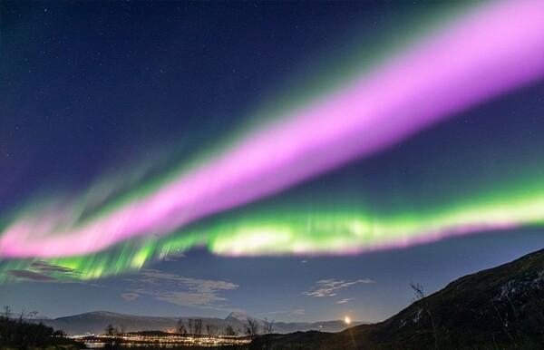
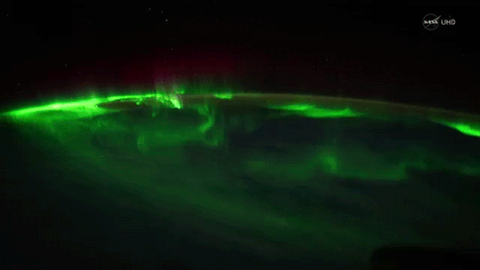
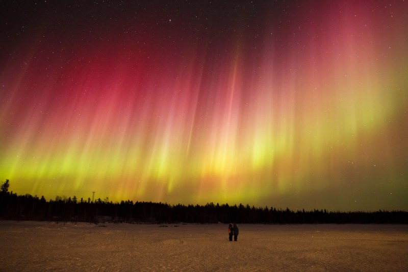

더 많은 기사를 읽고 싶으시면
아래의 구독 버튼을 눌러주세요.
이윤태 기자 2022.12.15
A few hundred yards down the mountain, a ghostly white fog rushed through the forest. “I saw it,” Saugstad said. “I saw it coming. But it was weird because it was coming through the trees. It was like snow billowing through the trees. Because it was such a treed area, I think for the first second I saw it I didn’t believe it.” Wangen and Peikert had just traversed in front of its path. It did not miss them by much. “I don’t know if I’d even come to a stop when I heard it,” Peikert said. “It was almost like wind and pressure more than noise. It literally felt like a freight train went over my tails. It wasn’t a deep rumble. I could feel this rush of air.” It was a blur of white, its shattered pieces moving about 50 m.p.h., a powder cloud two stories tall. Rudolph was the only one to scream. “Avalanche! Elyse!” Rudolph shouted. Saugstad tried to stride right, hoping to escape. She barely moved before snow flowed through her legs, dragging her down like a riptide. She pulled the cord on her air bag. She was overwhelmed so quickly by the rising snow that she did not know if it inflated. “I had no ability to control what was happening to me,” Saugstad said. “I was being tossed over and over and over. It was like being in a washing machine and all my body parts flailing every way. I didn’t know which way was up. I didn’t know which way was down. I couldn’t see anything.” She is likely to have tumbled just past Castillo. He groaned and turned his face away. He stuck his head between two trees, like a prisoner in a stockade. For 16 seconds, snow and ice pounded his back and washed over him. His shoulders were jammed against the trees. His face pushed into branches of pine needles. He could feel the heavy assault of snow lashing at his back. Trees cracked around him. Some in the path were chopped in half — the stumps left in the soil, the rest carried away in the growing torrent. The avalanche, a relatively small one, started with about 6,000 cubic meters of snow and collected 7,000 cubic meters more on the way down. It probably weighed about 11 million pounds.
오로라는 태양풍 입자가 산소와 질소 등 어떤 기체와 충돌하는지에 따라 색이 달라진다. 오로라가 대규모로 발생하면 ‘서브스톰’(Substorm)으로 불리는 장관이 연출된다. 녹색과 빨간색은 산소, 분홍색과 노란색은 질소가 만들어 내는 색이다. 그중에서도 산소와 만나며 만들어지는 녹색을 가장 많이 볼 수 있다. 가장 흔하게 관측되는 오로라는 커튼 형태다. 특정한 모양 없이 희미한 녹색 안개처럼 보이는 경우도 있다.

극지방 근처에서만 볼 수 있는 극광(極光) 오로라! 현란한 오로라의 모습을
제대로 보게 되면 그 치명적인 유혹에 정신을 잃을 정도가 된다. 열 번
넘게 절정의 오로라를 경험한 필자지만 아직도 눈을 감으면 그 장면이
떠오르고 몸이 떨려오는 것을 느낀다.
신의 영혼, 영혼의 춤 등 다양한 이름으로 불리는 극광에 어떻게 새벽의
여신 오로라의 이름이 붙었을까? 새벽과 오로라 현상, 어떤 관련이 있을까?
극광에 오로라라는 이름을 처음 붙인 것은 17세기 초 이탈리아의 천문학자
갈릴레이였다. 프랑스의 과학자 피에르 가상디도 비슷한 시기에 오로라를
언급했다. 이들이 살았던 이탈리아나 프랑스에서 볼 때 오로라는 북쪽 하늘
지평선 근처에 붉은 빛으로 나타난다. 우리나라 옛날 기록에 나오는
적기(赤氣) 현상과 같다. 북쪽 지평선 근처에 붉은 빛이 돌면서 마치
새벽이 오는 것처럼 보였기 때문에 처음 이름은 ‘북쪽의 새벽’을 뜻하는
‘오로라 보리알리스(aurora borealis, 보리알리스는 북쪽을 의미하는
라틴어)’였다. 후에 남반구 오로라가 알려지면서 오로라가 일반명사가
되었다.
하지만 갈릴레이가 붉고 푸른 빛, 심지어 핑크 빛이 도는 오로라의 춤을
보았다면 결코 극광에 새벽을 뜻하는 오로라란 이름을 붙이지는 않았을
것이다. 갈릴레이는 실제 극지방까지 가본 적이 없었고, 따라서 오로라의
치명적인 유혹에 빠져 본 적이 없었다.
직접 오로라를 보지 못한 사람들은 오로라가 항상 푸른 빛으로 보인다고
생각할 것이다. 하지만 보통의 오로라를 맨눈으로 보면 구름과 비슷하고
특별한 색깔을 느끼기 어렵다. 하지만 오로라가 강하게 몰아칠 때면 그
색이 진해지면서 다양한 색깔을 느끼게 된다.
오로라, 과연 그 빛의 정체는 무엇일까? 오로라는 태양에서 오는 전기를 띤
입자(대부분은 전자)들이 지구의 자기장과 만나면서 시작된다.
태양풍이라고 불리는 이들 입자들은 지구 자기장을 따라 양쪽 극지방으로
모인다. 그리고 극지방에서 대기와 만나 충돌하는데 이 때 에너지를 받아서
흥분한 대기 입자들이 정상 상태로 돌아가면서 내보내는 빛이 바로
오로라이다.

누군가가 갑자기 나타나 자신을 때리고 달아났다고 생각해보자. 맞은
사람은 흥분하게 되고, 이 흥분을 푸는 방법은 둘 중 하나다. 옆에 있는
누군가에게 화풀이를 하던가, 화풀이할 사람이 없으면 스스로 시간이
지나서 화를 푸는 것이다. 태양 입자와 충돌한 대기의 경우도 비슷하다.
우리가 보는 오로라는 대부분 산소 원자에 의해 생기는 빛이다. 지표
근처의 대기에는 질소분자와 산소분자가 약 4:1의 비율로 분포한다. 하지만
땅에서 100km 이상 떨어진 곳에서는 그 분포가 다르다. 100 ~ 200km 사이에
가장 많이 존재하는 것은 질소분자와 산소원자이다. 200km 이상에서는 산소
원자의 비율이 제일 높다. 고층 대기에 산소원자들이 많은 이유는 낮 시간
동안 태양 자외선에 의해 산소분자들이 산소원자로 쉽게 분해되기
때문이다. 질소 분자는 산소 분자에 비해 결합력이 강하기 때문에 쉽게
분해되지 않는다.
산소 원자는 태양에서 오는 입자들에 의해 중간 단계(1D)까지 흥분한다. 이
단계에서 원래의 안정된 단계(3P)로 돌아갈 때 내는 빛이 바로 붉은
빛이다. 산소 원자가 붉은 빛을 내고 안정될 때까지는 약 2분 정도의
시간이 걸린다. 고도가 150km 이하로 내려오면 입자들이 많아지기 때문에
그 시간 이내에 다른 입자들과의 충돌로 에너지를 잃게 된다. 따라서 산소
원자의 붉은 빛은 입자들이 적은 150km에서 250km 사이에서 주로 보이는데
드물게 600km 이상에서 보이기도 한다.
100km에서 150km 사이에서는 주로 산소 원자의 녹색 빛이 보인다. 산소
원자가 녹색 빛을 내기 위해서는 중간 단계보다 더 높은 단계(1S)로
흥분해야 한다. 하지만 산소 원자에 비해 훨씬 작은 태양 입자(전자)들과의
충돌로는 이 단계에 이르기 힘들다. 여기에서 역할을 하는 것이 바로 질소
분자이다. 150km 아래에선 질소 분자들이 충분히 많기 때문에 태양
입자들과의 충돌로 질소 분자들이 먼저 흥분한다. 그리고 흥분한 질소
분자들이 이미 흥분한 산소 원자와 충돌하면 산소 원자는 더 높은
상태(1S)까지 흥분하게 된다.
산소 원자가 이 단계에서 중간 단계(1D)로 내려가는 데는 약 1초 정도의
시간이 걸리고, 이 때 나오는 빛이 바로 녹색 빛이다. 이 정도 높이에서는
주위에 입자들이 많기 때문에 안정된 단계(3P)에 이르기 전(약 2분)에 다른
입자들과 충돌하여 에너지를 잃게 된다. 산소 원자의 에너지 상태인 안정된
단계(3P), 중간 단계(1D), 높은 단계(1S)에 대한 자세한 설명은 대학교
화학 수준이기 때문에 여기서는 생략하겠다.
태양 입자들이 100km 근처까지 내려오면 직접 질소 분자들을 흥분시켜 빛을
내게 한다. 질소 분자들은 붉은 빛과 파란 빛을 내는데 이 빛들이 서로
합쳐져서 핑크 빛으로 보이기도 한다. 또한 녹색 빛과 합쳐지면서 노란
빛이나 흰색 빛이 되기도 한다. 녹색의 오로라가 커튼처럼 휘몰아칠 때 그
아래에서 핑크 빛이나 노란 빛의 오로라가 보이는 데 이때가 바로
오로라폭풍(aurora storm)이라고 하는 최대의 오로라가 보일 때이다. 태양
입자들이 100km까지 내려와 질소 분자들을 흥분시키기 위해서는 상당히
많은 입자들이 필요하다. 따라서 오로라폭풍은 태양 폭발이 있을 때 많이
나타난다.
그런데 특별한 태양 폭발이 없는데도 오로라폭풍이 빈번이 나타나기도
한다. 과연 어떤 이유에서 오로라폭풍이 발생하는 것일까? 미국항공우주국
NASA는 오로라폭풍의 원인을 밝히기 위해 지난 2007년 THEMIS라는 지구
자기장 관측 위성을 발사했다. 이 위성이 밝혀낸 오로라 폭풍의 비밀은
다음 주에 공개하기로 하겠다. 이번 주말 자정 무렵 YTN 스페셜
다큐멘터리로 지난 달 필자가 캐나다 나하니 국립공원에서 관찰한 오로라의
모습이 공개된다. 오로라의 멋진 향연을 감상하기 바란다.
"평생소원 ‘오로라 관측’을 위해 북극권을 찾았다. 여행 적금을
차곡차곡 모아 먼 길 떠났는데, 웬걸. 내내 희뿌연 하늘만 보다 왔다.
그나마 카메라가 포착한 옅은 녹색 하늘을 보며 아쉬움을 달랜다."
이런 이야기를 들으면 오로라 여행을 떠나기가 망설여진다. 실제로
‘허탕’을 쳤다는 여행자가 적지 않다. 그러나 목적지를 잘 고르면 하늘에
몰아치는 오로라 폭풍을 보는 게 그저 꿈은 아니다. 사흘 밤 관측을
시도하면, 오로라를 만날 확률이 95%에 달하는 캐나다 옐로나이프 같은
곳에선 말이다. 하루 더 도전하면 관측 확률이 무려 98%란다.
노스웨스트 준주의 최대도시 옐로나이프는 북위 62도에 자리한다.
북극권(북위 66도)보다는 한참 아래지만 미 항공우주국(NASA)은
옐로나이프를 세계 최고의 오로라 관측 명소로 꼽는다. 과학적 근거가
있다. 오로라는 태양풍과 지구자기장에 의해 발생한다. 둥근 띠 같은
‘오로라 오벌(Oval)’이 자기장이 강한 지역에서 진하게 나타난다.
지구자기장이 가장 센 곳, 바로 나침반이 가리키는 북쪽이 현재 캐나다
허드슨만 쪽이다.
또 중요한 게 있다. 오로라 오벌은 노르웨이나 아이슬란드 같은 북유럽
상공도 지난다. 한데 캐나다보다 겨울 날씨가 안 좋다. 덜 추운 대신
습도가 높아 눈이나 비가 많이 내린다. 아무리 오로라가 강해도 하늘이
잿빛이면 ‘꽝’이다. 옐로나이프는 사방 1000㎞ 이내에 높은 산맥이 없어
평지나 다름없다. 탁 트인 시야 또한 오로라 명당으로서 중요한 요건이다.
다른 지역에서 좌우로 물결치는 오로라가 주로 보인다면 옐로나이프에서는
멀리 지평선에서 솟아올라 머리 위까지 수직으로 솟구치는 오로라를 만날
확률이 높다.
옐로나이프에서 오로라를 관측하는 방법은 여러
가지다. 여행사를 이용하는 게 가장 편하다. 국내 여행사 대부분이 ‘오로라
빌리지’ 같은 옐로나이프 소재 전문업체의 프로그램을 예약해준다. 도시의
‘빛 공해’가 없는 자연에서 오로라를 볼 수 있다. 가이드가 오로라 관측법,
촬영법을 알려주고 원주민 텐트 ‘티피’에서 마시멜로를 구워 먹으며 쉴
수도 있다.
이색 숙소에서 머물며 오로라를 즐길 수도 있다.
트라우트 록 로지(Trout Rock Lodge), 블래치포드 레이크 로지(Blachford
Lake Lodge), 옐로 독 로지(Yellow Dog Lodge) 같은 아늑한 산장에서 창문
너머로 물결치는 오로라를 보는 것도 낭만적이다.
오로라 헌팅(Hunting)이란 것도 있다. 수동적으로 오로라를 기다리는 게
아니라 야생동물을 사냥하듯 오로라를 추적하는 거다. 용감한 여행자들은
렌터카를 몰고 오로라 사냥에 나서기도 하지만 현지 여행사 프로그램도
있다. 날이 흐리면 최대한 구름이 없는 곳으로 이동하는 식이다. 정해진
베이스 캠프 없이 차 안에서 대기해야 하지만 스릴까지 덤으로 느낀다.
한국업체인 헬로 오로라(Hello Aurora) 뿐 아니라 오로라 닌자(Aurora
Ninja), 노스스타 어드벤처(North Star Adventures) 등 많은 업체가 있다.
벡스 케널(Beck’s Kennels)에서는 개썰매를 타고 오로라를 찾아다니는
프로그램을 운영한다.
오로라가 안 보이는 낮에도 지루할 틈이 없다.
용맹한 허스키와 함께 설원을 달리는 개썰매 투어, 스릴 만점의 스노모빌,
저벅저벅 눈길을 헤치고 걷는 맛이 일품인 스노슈잉 등을 즐길 수 있다.
오로라가 생겨나는 지역은 대부분 북극과 남극을 중심으로 도넛
모양으로 분포한다. 이를 ‘오로라 타원체’라고 부른다. 북극권의 경우
아이슬란드와 그린란드, 노르웨이, 스웨덴, 핀란드에서 자주 볼 수 있다.
러시아 북부, 스코틀랜드 일부 지역, 미국 알래스카, 캐나다도 여기에
해당된다. 반대로 남극에서도 볼 수 있는데, 이를 ‘남극광’이라고 부른다.
남아메리카 남부 아르헨티나의 우수아이아 지역에서 잘 보인다.
스마트폰으로 영상편집만 하면 해외여행의 행운이 쏟아지는 프로모션이
펼쳐진다. 심지어 편집을 자동으로 해주는 앱을 활용하면 돼 여행 영상에
관심있는 이라면 충분히 도전해볼만 하다.
여행 브이로그 자동편집 앱 비브(ViiV)를 론칭한 비디오몬스터는 앱 출시
기념으로 ‘여행 영상 콘테스트’를 진행한다. 오는 18일까지 ‘비브(ViiV)’
앱을 다운 받아 브이로그 영상을 만들고, 앱 내 피드에 #런칭이벤트
해시태그를 게재해 공유하면 응모 완료이다.
응모 조건이 쉽다고 상품마저 가볍지 않다. 1등 1명에게는 ‘버킷리스트
1순위’로 꼽히는 350만원 상당의 오로라 해외여행상품권을, 2등 8명에게는
각각 100~250만원 상당의 서유럽, 미서부, 일본, 동남아 여행권을
제공한다. 이밖에 더스위트호텔 숙박권, 애플 아이팟 프로 2세대 등의
경품도 증정한다.
이벤트 결과는 이달 23일에 비브(ViiV) 앱을 통해 발표하며, 수상자는
응모자 중 내부 선정 기준을 통해 선정한다.
비브는 스마트폰 화면 탭(Tap) 한 번으로 여행 브이로그 영상을 자동
제작해주는 앱이다. 자신의 폰에 위치와 지도 정보(GPS) 등이 담긴
영상이나 이미지만 있으면 누구나 여행 브이로그 영상을 손쉽게 제작할 수
있다.
개별 영상과 이미지의 4가지 메타데이터인 “언제, 어디서, 무엇을,
누구와”를 실시간으로 분석 및 처리하고, 이미지와 영상 배경이 달라지면
전환 효과를 부여해 그에 맞는 음악과 폰트도 자동으로 추천해준다.
비디오몬스터 관계자는 “보다 편리하게 영상을 제작할 수 있도록 하자는
목표 아래 모바일 앱을 론칭하게 됐다”며 “여행길이 점점 열리고 있는 만큼
많은 분들이 여행 후기 및 여행 정보를 브이로그 영상으로 만들고, 또
공유하는데 비브가 일조하고 싶다”고 밝혔다.
이어 “여행을 다녀온 뒤 사진이나 영상을 그대로 두지 말고 자신만의
개성있고 스토리텔링을 가미한 작품으로 간직하면 더욱 의미가 있을
것”이라며 “자동편집 기능으로 부담없이 만들고 공유할 수 있는 만큼
앞으로 더 많은 이들이 비브로 여행 영상을 즐기길 바란다”고 전했다.
태양의 빛은 11년 주기를 가지고 강해졌다가 약해졌다를 되풀이한다. 태양의 활동이 강해지면 자기장도 강해진다. 따라서 흑점 폭발이 크게 일어나면 오로라를 볼 수 있는 지역도 그만큼 넓어진다. 오로라는 밤하늘이 어두운 새벽과 노을 사이 시간에는 언제라도 관측 가능하다. 하지만 낮에도 발생한다. 태양 빛이 너무 밝아 관측이 불가능할 뿐이다. 오로라를 보기 위해서는 영하 20℃ 이하의 구름 한 점 없이 청명한 날이어야 한다. 해발 100km 이내로 낮게 떠 있으므로 빛 공해가 없고 보름달이 떠있지 않으면 맨눈으로도 관찰이 가능하다.

한여름 무더위가 한풀 꺾이고 선선한 바람이 불어오는 요즘, 별보러
여행가기 딱 좋은 시기다. 누구나 한번쯤 꿈꾸는 오로라 관측을 영상의
기온에서도 볼 수 있는 호주로의 여행을 떠나보자.
실제로 호주가 위치한 남반구의 경우 북반구에서는 볼 수 없는 별자리들을
100배 이상 볼 수 있다. 호주에서는 켄타우루스 자리의 알파별, 마젤란
성운 등 다른 지역에서는 볼 수 없는 은하를 관측할 수 있으며 호주 국기에
그려진 남십자성도 일년 내내 볼 수 있다.
특히 호주의 아웃백은 주변에 건물이나 불빛이 없어 지구상에서 밤하늘이
가장 어둡다. 때문에 별을 관측하기에 매우 적합한 환경이다.
호주 최남단인 태즈매니아로 가면 사시사철 남극광을 볼 수 있다. 남극광은
남반구에서 발생하는 오로라를 지칭하는데, 형형색색의 별빛이 밤하늘을
가득 수놓는 모습을 보기에 가장 좋은 시기는 5월부터 9월까지다.
태즈매니아의 여러 섬들이나 국립공원에서는 빛 공해도가 낮아 남극광을 볼
수 있는 확률이 매우 높다.
특히 태즈매니아 호바트에서 가장 높은 산인 마운트 웰링턴은 상쾌한
공기를 마시며 주변 지역 전망을 한 눈에 볼 수 있는 명소로 손꼽힌다.
차로 30분 정도 걸리는 해발 1,270m 높이의 정상에서는 호바트, 브루니
아일랜드, 태즈만 페닌슐라가 한눈에 내려다보인다. 어렵지 않은 난이도의
다양한 트랙과 산책로들이 마련되어 있어 낮에는 실버 폭포나 드높이 솟은
유칼립투스 나무를 구경하며 걸어보는 것도 좋다. 기상청에서 남극광에
대한 알림을 신청해 환상적인 빛의 향연을 즐겨보자.
뉴 사우스 웨일즈 중서부 쿠나바나브란 마을 근처에 있는 워럼벙글
국립공원은 빛 공해가 없어 직접 별을 찾아보기에 최적의 장소다. 관광객
센터에서 투어를 신청해 별자리에 대한 자세한 설명을 들으며 호주의
밤하늘을 더 알차게 감상할 수 있다. 또는 근처 사이딩 스프링스
천문대에서 호주에서 가장 큰 광학 망원경을 통해 별들을 더 가까이에서
관찰할 수도 있다.
남반구 최초이자 호주 유일의 다크 스카이 파크인 워럼벙글 국립공원은
높은 고도와 낮은 습도, 대도시와의 거리 세 가지 조건을 모두 만족하는
최상의 별 관측 장소이다. 수천 년의 화산 활동으로 만들어진 90m 높이의
브레드나이프와 숲이 우거진 능선도 독특한 풍광을 자아낸다.
호주 전역에는 밤하늘의 광채를 구경할 수 있는 글램핑 명소들이 있다.
퀸즈랜드의 나이트폴 캠프, 노던 테리토리의 와일드맨 윌더니스 롯지,
남호주 플린더스 산맥의 윌페나 파운드 리조트에 있는 이카라 사파리 캠프
등에서 별 관측 그 이상의 진귀한 경험을 할 수 있다.
울창한 열대우림에 자리 잡고 있는 나이트폴 캠프에는 목재로 된 바닥,
개인 욕실, 회전 벽난로가 갖춰진 사파리 텐트가 많다. 이곳에서 보내는
하룻밤 동안 언제든지 텐트 밖으로 나가 고개만 들면 영롱한 빛을 뽐내는
별들을 바라볼 수 있다. 낮에는 천연 스파에서 햇볕을 쬐며 여유를
즐기거나 숲속에서 피부 관리 서비스와 마사지를 받아볼 수도 있다.
캥거루과에 속하는 붉은목왈라비와 운이 좋으면 오리너구리까지 다양한
야생동물 또한 만날 수 있다.
더 많은 기사를 읽고 싶으시면
아래의 구독 버튼을 눌러주세요.